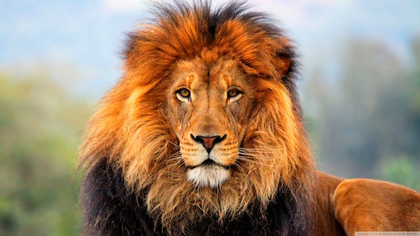

LION
Lions are known as the king of beasts and are the second-largest big cats after tigers. They are the only cats that live in large social groups called prides. Once found across Africa, Europe and Asia, they are now mostly found in sub-Saharan Africa with a small population in India. Lions are powerfully built with muscular bodies, strong jaws, and males have impressive manes that make them look even larger. A male lion can weigh up to 250kg and reach 1.2 meters at the shoulder, while females are smaller but are actually the better hunters.
What makes lions different from other cats is their teamwork. Females do most of the hunting together, working as a group to surround and take down prey like zebras and wildebeest. Their roar is legendary - it can be heard up to 8 kilometers away and is used to warn other lions to stay away from their territory. A lion's mane protects its neck during fights with other males and also shows how healthy and strong he is. Despite being fierce predators, lions are lazy and can sleep up to 20 hours a day.
They are carnivores and apex predators, meaning they are at the top of the food chain with no natural enemies except humans. They live in prides of 3 to 40 lions, usually made up of related females, their cubs, and a few males. Cubs are incredibly playful and learn to hunt by playing with each other.
WHERE WILL YOU FIND THEM
You will find the lions at pen E28, in the big cat area opposite the tigers.